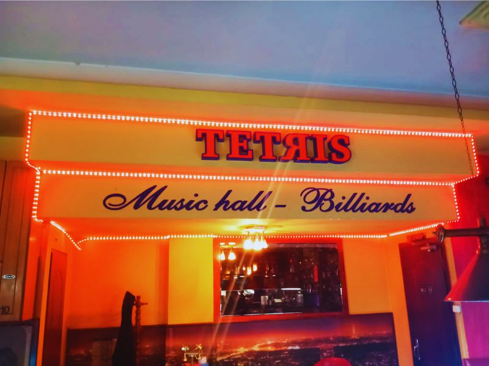
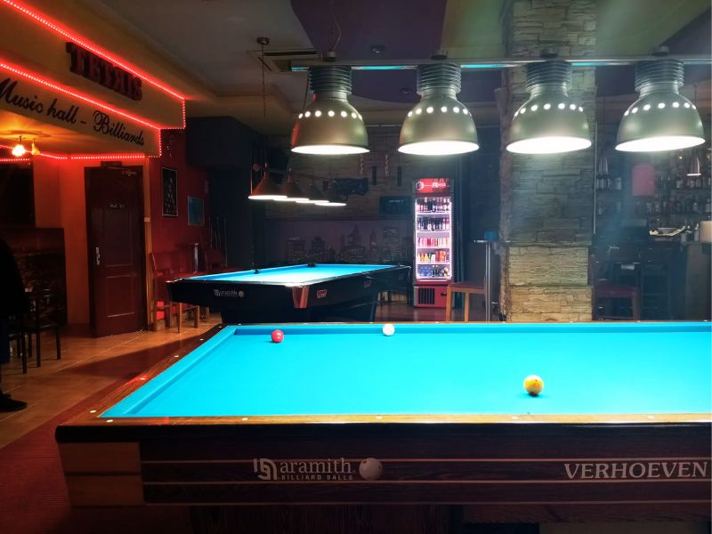
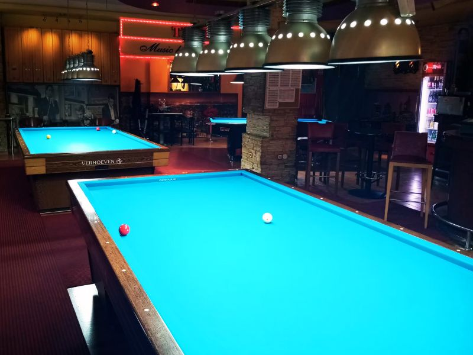
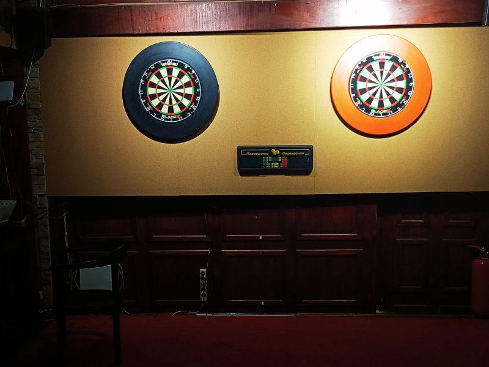
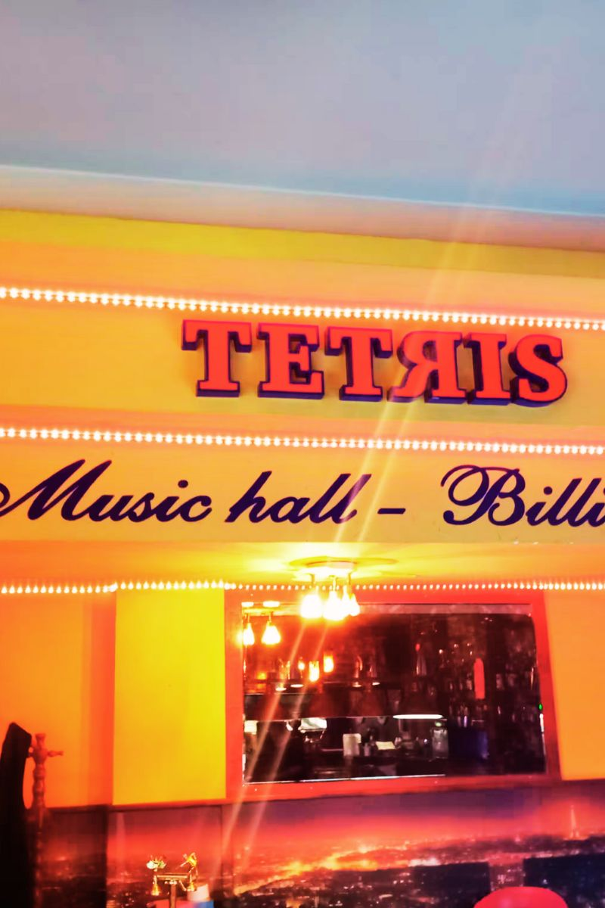
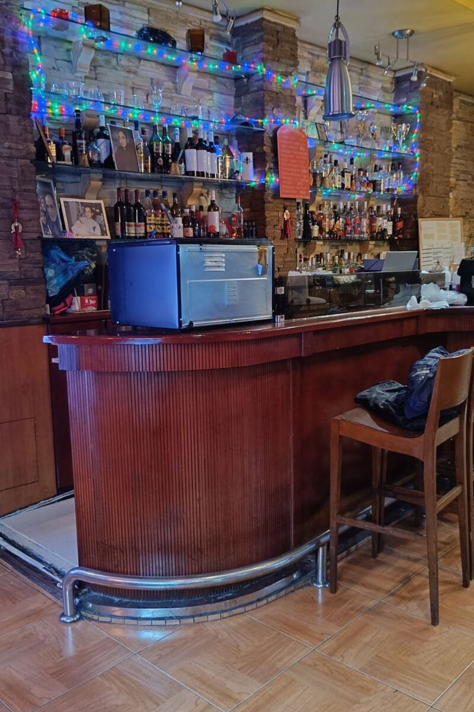
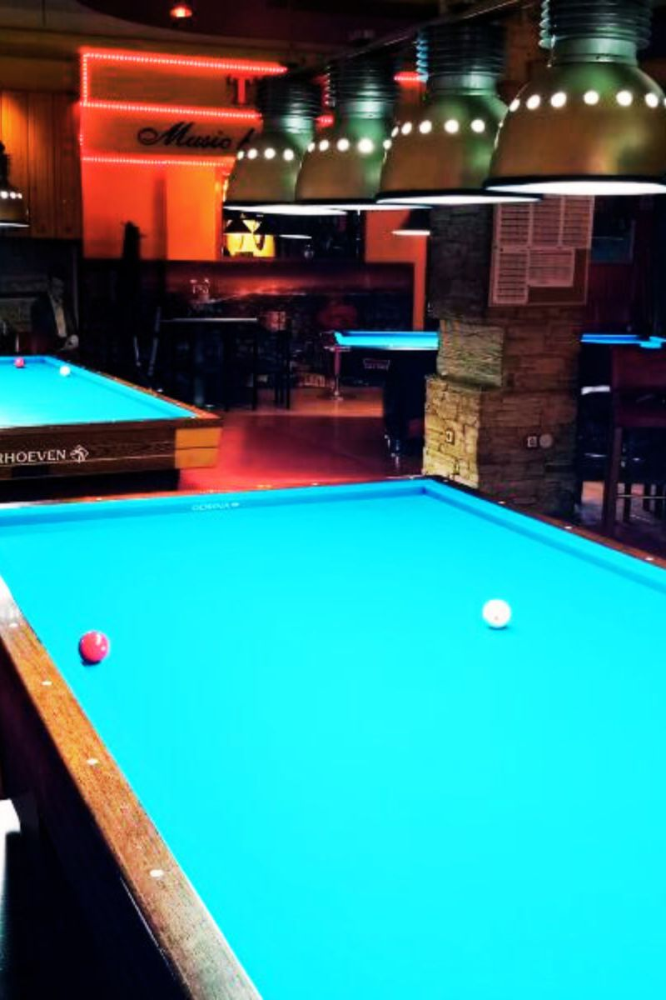
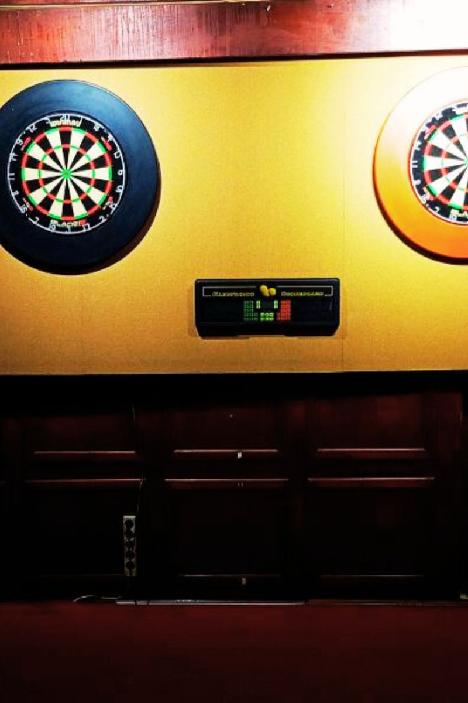
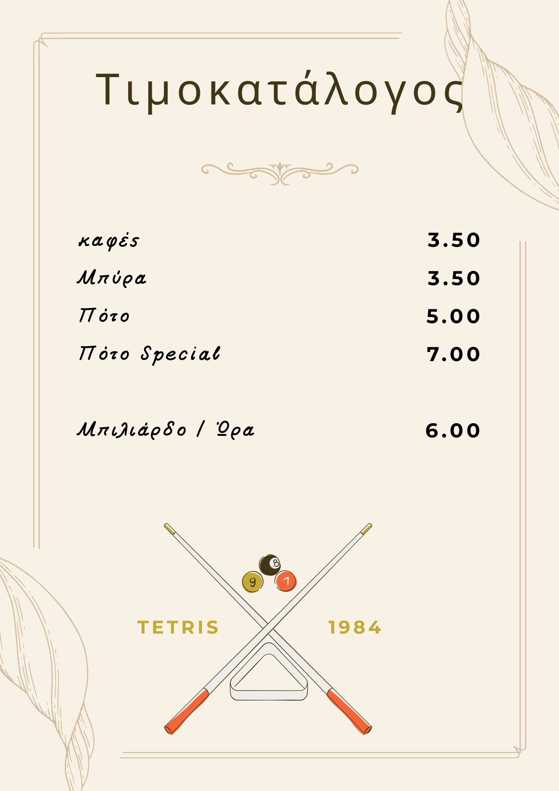

Διάλεξε τη στιγμή της ημέρας που σου ταιριάζει. Για έναν καφέ και μια χαλαρή παρτίδα το πρωί, για μια μπύρα και παιχνίδι το απόγευμα ή για ποτό στο bar το βράδυ, με χαμηλό φωτισμό και ωραία μουσική. Όποια ώρα κι αν έρθεις, θα βρεις τον ρυθμό σου — είτε γιa μπιλιάρδο, τάβλι, σκάκι ή βελάκιa, είτε απλά για να χαλαρώσεις .
Το Tetris είναι κάτι περισσότερο από ένα απλό μπιλιαρδάδικο – είναι ένα σημείο συνάντησης, μια όαση χαλάρωσης και επικοινωνίας στο Πέραμα.
Αν το μπιλιάρδο είναι για σένα κάτι παραπάνω από ένα απλό παιχνίδι, τότε βρίσκεσαι στο σωστό μέρος. Στον χώρο μας θα βρεις επαγγελματικά τραπέζια Verhoeven και Aramith, γνωστά για την ακρίβεια και την άψογη κύλιση.
Ο χώρος είναι ειδικά διαμορφωμένος για άνετο παιχνίδι, με σωστή διάταξη, ελευθερία κινήσεων και stand για τη στέκα σου. Παράλληλα, διαθέτουμε ντουλάπια φύλαξης με κλειδί, ώστε να έχεις τον εξοπλισμό σου πάντα ασφαλή.
Αν δεν έχεις δική σου στέκα, σου παρέχουμε ποιοτικές επιλογές για να απολαύσεις κάθε παρτίδα στο μέγιστο. Είτε παίζεις χαλαρά είτε πιο ανταγωνιστικά, εδώ θα βρεις τις κατάλληλες συνθήκες.








